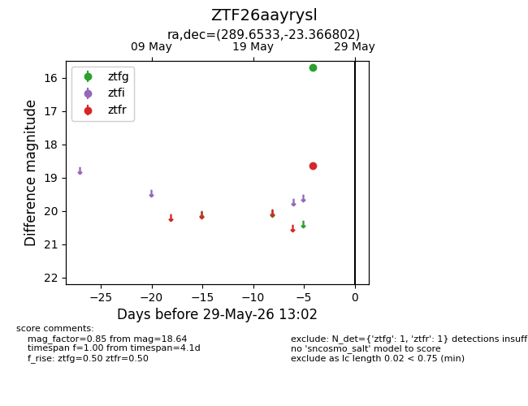
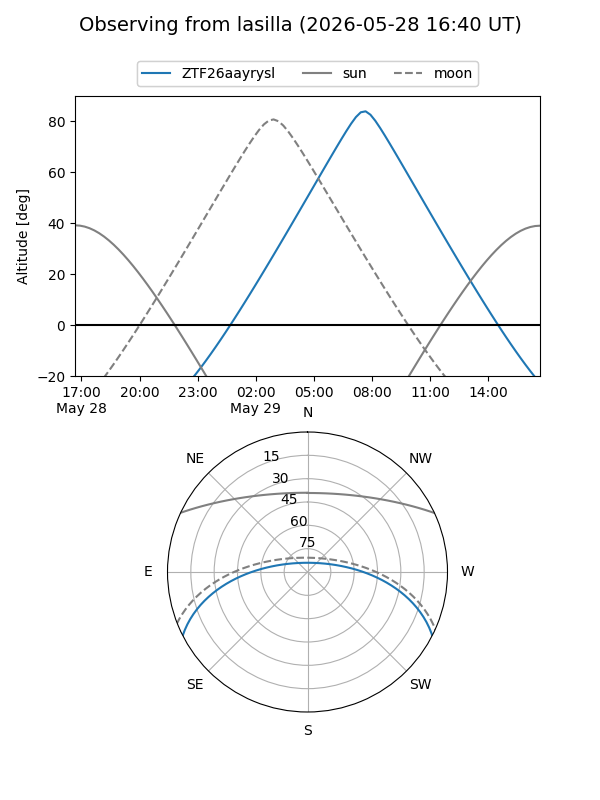
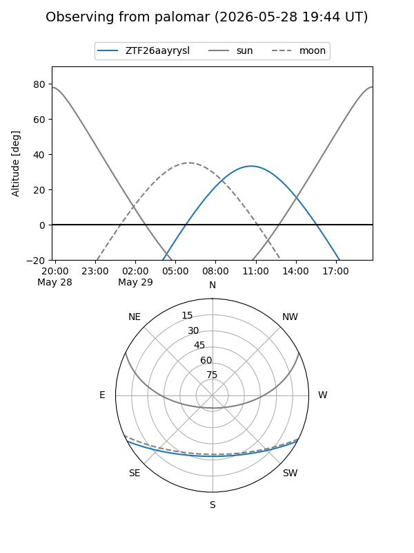

ZTF26aayrysl
Target ZTF26aayrysl at 2026-05-29 13:04
Aliases and brokers:
lsst-FINK: link
lsst-Lasair: link
lsst-ALeRCE: link
ztf-FINK: link
ztf-Lasair: link
ztf-ALeRCE: link
alt names
ZTF26aayrysl (ztf,fink_ztf)
Coordinates:
equatorial (ra, dec) = 289.6533,-23.36680
equatorial (HMS+DMS) = 19:18:36.79,-23:22:00.49
galactic (l, b) = (14.5185,-16.11095)
Flags:
Photometry:
last ztfg=15.69, ztfr=18.64
1 ztfg, 1 ztfr detections
Lightcurve

Visibility


Additional plots